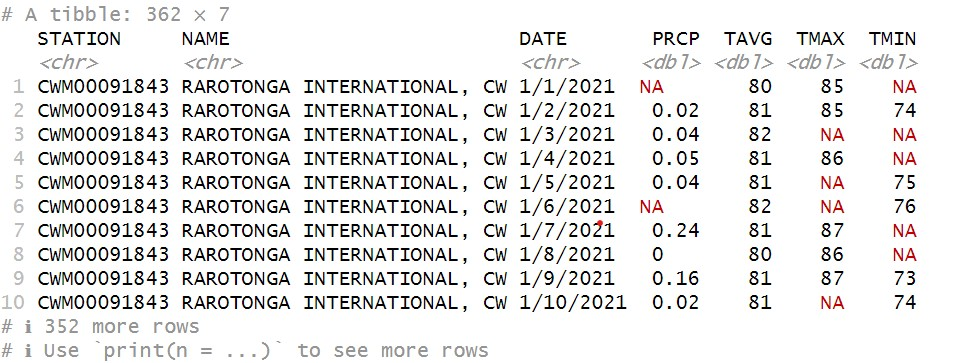
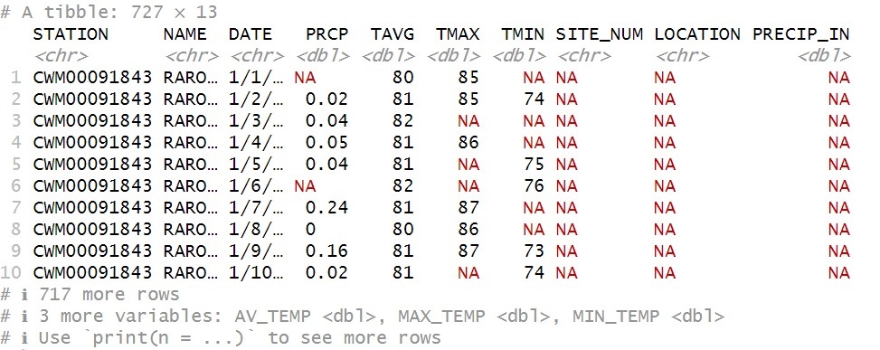
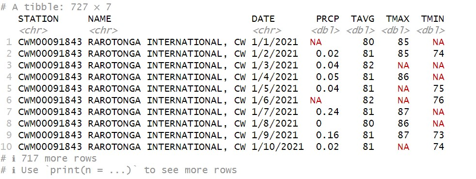
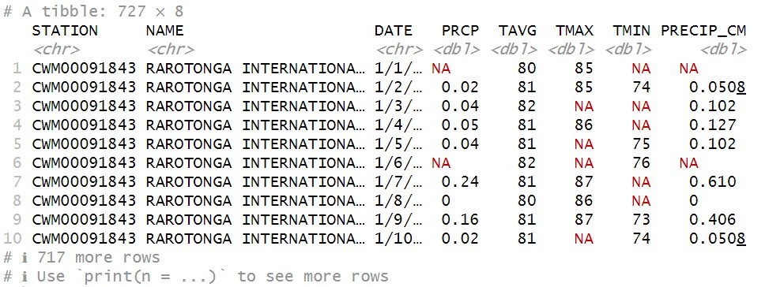

4 Working with data
In this section we’ll look at ways to modify data stored in a table. This will give us the foundation to start dealing with cleaning, tidying, and transforming data. I highly recommend t
Changing the raw data
As we move on through this lab, we’re going to be making changes to the original dataset. Whenever we’re going to be changing the original data, it is often a good idea to work a copy so we don’t mangle it and not have a way to return to it without starting over.
Luckily, this is a pretty painless process. To make a copy of a dataset in R, all we do is assign the same dataset to a new variable name, like so:
raro2022mod<-raro2022
Now we can feel free to make changes to the Rarotonga weather data stored in raro2022mod, knowing that if we needed to reference the original data it is still stored in raro2022.
Getting and changing column names
Both dataframes and tibbles store a set of names associated which each column in the dataset. These can be accessed using the names function:
names(raro2022mod)
[1] "STATION" "NAME" "DATE" "PRCP" "TAVG" "TMAX" "TMIN"
This returns a vector of character strings corresponding to the column headers. In some cases it can be useful to know how to access these names directly. Let’s say that we weren’t especially fond of these names and wanted to change them. We can do this by first creating a vector of names we do like. For example:
newNames<-c("SITE_NUM","LOCATION","DATE","PRECIP_IN","AV_TEMP","MAX_TEMP","MIN_TEMP")
Next, we assign the new names by once again using the names function:
names(raro2022mod)<-newNames
This is a little different than anything we’ve seen so far, assigning a value to something that is inside of a function. This code is effectively saying “take the column names in the raro2022mod dataset and replace them with this newNames vector.” Now when we call for the names again…
names(raro2022mod)
…we get the new values we’ve inserted:
[1] "SITE_NUM" "LOCATION" "DATE" "PRECIP_IN" "AV_TEMP" "MAX_TEMP"
[7] "MIN_TEMP"
Getting and changing values
As we saw last week, we can look at individual values in a dataset by giving the row and column numbers in square brackets ([]). For example, if we wanted the value on the 4th row in the 5th column, we’d do this:
raro2022mod[4,5]
# A tibble: 1 × 1
AV_TEMP
<dbl>
1 80
Whoa! That’s a lot of info just to get the number 80. What is happening here is that R is taking the individual value from your tibble and returning them to you as a 1 column, 1 row tibble, complete with column header.
Occasionally, you might find that individual data points may need adjusting. For example, let’s say that Jerry at NOAA called you up. He was going back through his notes and realized he entered the wrong average temperature in the Rarotonga Airport records on January 4, 2022: it should be 81 degrees rather than 80! He was concerned this might affect your research and called you up to warn you. If you want to fix this value, you can use the square brackets and assign a new value:
raro2022mod[4,5]<-81
Later, Jerry calls to say nevermind, it was a rounding error, the weather on the 4th was fine the way it was. You can change it back the same way:
raro2022mod[4,5]<-80
Looking up values using the square brackets uses two numbers that are indices (the plural of index). These indicate a position in a sequence of rows (row 1, row 2, …) or a sequence of columns (column 1, column 2, …) . This is a little like using a coordinate system, giving the index position of a value along two axes. These need to be numerical objects, but R will also accept variables that store numerical objects as indices.
Open a new script and save it to your scripts folder with the name WorkingWithData
Write some code that assigns a number (say 3 for starters) to a variable called rowIndex
Add another variable called columnIndex that also stores a number (say, 6)
Finally, write some code that uses square brackets to look up a value in the raro2022mod tibble with rowIndex and columnIndex. Once you’ve got this working, try changing the numbers for rowIndex and columnIndex and see what happens.
Stretch activity (optional)
What if you wanted values from multiple rows? Or multiple columns? Or both? Can you think of a way to still use square brackets and get more than one value back?
Adding rows
Sometimes you may want to add rows to your data. For example, you may record the same kind of data at several different places or several different times, and you may want to combine the multiple files into a single table.
In your data folder, you should have a dataset called raroWeather2021.csv. Import this data in as a tibble using read_csv and store it as a variable called raro2021:
raro2021<-read_csv("Data/raroWeather2021.csv")
This data comes from the same source, and is also weather data from Rarotonga Airport, but covers the year 2021 instead of 2022. If you look at it, it is structured very much like our 2022 data:
raro2021

In fact, the major key difference here is that, rather than 365 days, this dataset only has 362. Even if it were a leap year, that means that a few days are missing from this dataset. This won’t affect what we’re doing today, but it’s always worth checking the dimensions of your tibbles to make sure the numbers make sense.
This difference aside, we can see that this has the same 7 columns as our existing data, which means that we should be able to combine these two into a single tibble using the bind_rows function, which works like so:
raro21_22<-bind_rows(raro2021,raro2022mod)
Let’s take a look:
raro21_22

You can see now that there are 727 rows, so we now have two years of data together. However, we now have 13 columns! What gives?! This problem is actually not an issue with the data, but stems from something we did to it: we changed the names in the raro2022mod columns. Because of this, R treats them as different variables, and so when it combines them, it creates a new column for each unique column name. It then fills in the portions for which it has no data (for example, PRECIP_IN for the 2021 data) with NAs.
What can we do to fix this? We could rename all our columns for the 2021 data to match the 2022 data. But also remember that we still have our raw data for 2022 saved as raro2022, so we can just substitute that in to combine them both:
raro21_22<-bind_rows(raro2021,raro2022)
And when we have a look at the tibble:
raro21_22

Ah, much better. Back to 7 columns, but both years in the same table.
Adding columns
There are many instances when you might want to add additional columns to a table. For example, if you had columns of different valuations for ecosystem services provided by state parks, you might want to sum them all and create a column for total value. Or maybe you want to combine
Let’s say we wanted to convert the precipitation values in our Rarotonga weather data from imperial to metric. The math we need to do so is:
\[ P_{cm}=P_{in} \times 2.54 \]
Where \(P_{cm}\) is precipitation in centimeters, \(P_{in}\) and is precipitation in inches.
First, let’s take the precipitation data we have, which is in inches, out of the tibble and into a vector called raroPrecip:
raroPrecip<-raro21_22$PRCP
See that we can still use the dollar sign ($) operator to indicate column values, just as we did with dataframes. Let’s have a look:
raroPrecip
It will probably spit out something that looks like this:
[1] NA 0.02 0.04 0.05 0.04 NA 0.24 0.00 0.16 0.02 0.20 0.00 0.00 NA
[15] 0.03 0.00 NA 0.00 NA NA NA NA NA 0.01 0.02 0.00 0.01 NA
[29] NA 0.00 0.06 NA 0.20 0.00 NA NA 0.00 NA 0.32 0.00 NA NA
[43] 0.14 0.26 0.79 0.05 1.18 NA NA 4.37 1.34 2.80 0.00 NA 0.39 NA
[57] 0.00 NA NA 0.02 NA NA 0.67 0.07 NA 0.02 0.20 NA 0.55 0.00
[71] 0.75 0.01 0.25 0.11 0.04 NA 0.00 0.39 NA 0.00 0.00 NA NA 0.03
[85] NA 0.11 NA NA 0.00 0.00 0.00 0.04 0.00 0.00 NA 0.47 0.04 0.02
[99] 1.98 0.04 NA NA NA 0.00 0.00 NA NA NA 0.04 NA 0.20 0.00
[113] 0.00 0.00 0.00 NA NA NA 1.61 NA 0.00 NA NA NA 0.00 NA
[127] NA 0.02 4.19 NA 0.08 0.00 NA 0.04 NA 0.04 0.04 0.00 0.00 0.00
[141] 0.04 0.08 0.00 0.00 NA NA 0.00 NA NA 0.00 0.00 0.04 2.09 0.00
[155] 0.00 NA 0.03 0.00 0.24 0.16 0.01 0.02 0.35 0.00 NA NA NA 0.01
[169] 0.00 0.00 0.00 0.12 NA NA 0.02 0.00 0.05 0.04 NA 0.01 0.00 0.00
[183] NA NA 0.01 0.00 NA NA 0.04 0.00 0.00 0.00 0.00 0.61 NA 0.00
[197] 0.00 NA NA 0.00 NA 0.00 NA NA NA 0.00 0.67 0.00 0.00 NA
[211] 1.85 NA 0.04 0.02 NA 0.00 0.00 0.00 0.00 NA 0.02 1.26 NA NA
[225] NA 0.00 NA 0.51 0.04 0.00 0.00 0.35 0.00 0.02 0.40 NA 0.00 NA
[239] 0.00 0.00 0.00 0.76 0.36 NA NA NA 0.01 0.00 NA NA 0.00 0.08
[253] 0.00 NA 0.05 0.00 NA 0.00 NA NA NA 0.03 0.00 0.00 NA 0.12
[267] NA 0.00 0.00 0.00 0.00 0.91 0.47 0.24 0.56 0.00 0.00 0.00 0.00 NA
[281] NA NA NA NA 0.00 0.00 NA 0.24 0.00 0.00 NA NA 0.00 0.00
[295] 0.00 0.00 NA 0.00 0.00 0.00 0.00 NA 0.00 0.04 0.01 0.00 0.00 0.00
[309] 0.04 0.00 NA NA 0.00 NA 0.04 NA NA 0.04 0.00 0.00 0.00 NA
[323] NA 0.04 0.00 0.00 NA NA NA NA 0.00 0.00 NA NA 0.69 0.00
[337] 0.00 1.06 0.17 NA NA 0.04 NA 2.09 NA 0.00 0.00 0.00 0.11 0.00
[351] 0.04 0.04 3.62 1.02 0.01 0.00 0.00 0.04 0.12 NA 1.24 NA 0.08 NA
[365] 0.32 NA NA NA 0.00 0.00 NA NA 0.04 NA NA NA 0.00 NA
[379] 0.10 NA 0.37 0.08 NA 4.37 0.00 0.61 0.13 0.02 0.00 0.00 0.01 0.03
[393] NA 1.07 0.40 0.01 NA NA NA 0.00 0.42 NA 0.04 0.00 NA 0.30
[407] 0.42 1.02 NA NA 0.70 NA NA 0.28 0.01 0.00 0.00 NA NA 0.00
[421] NA 0.02 0.05 0.00 0.00 0.00 1.20 0.98 NA NA 0.32 0.13 0.02 0.00
[435] 0.00 0.00 0.00 0.00 0.00 NA 0.01 0.00 0.43 0.01 0.00 0.04 0.00 0.08
[449] 0.88 NA 0.00 0.00 0.00 0.00 NA 0.14 0.00 0.00 0.00 0.02 0.00 0.01
[463] 0.79 0.69 NA 0.00 0.00 0.01 1.18 0.00 NA NA 0.01 NA 0.87 0.00
[477] 0.02 1.14 0.36 0.00 0.02 0.02 NA 0.00 NA 0.13 0.00 0.00 0.00 0.00
[491] NA 0.04 NA NA 0.20 0.00 NA 0.00 0.02 0.24 NA 0.82 0.00 NA
[505] NA NA NA NA NA 0.17 0.02 0.06 NA 0.39 0.04 0.04 0.28 0.05
[519] 0.00 NA 0.00 0.00 0.00 0.00 0.00 NA 0.82 0.00 0.00 NA NA NA
[533] NA 0.00 NA NA NA 0.16 NA NA 0.84 NA 0.08 0.83 NA 0.00
[547] 0.00 NA 0.00 NA NA 0.00 NA 0.00 0.00 0.00 NA 0.00 NA NA
[561] NA 0.04 0.13 NA 0.02 0.08 0.00 0.05 0.16 0.00 0.14 0.01 0.00 0.00
[575] 0.00 NA 0.00 0.00 0.02 0.01 0.01 0.00 NA NA 0.00 0.00 0.00 0.20
[589] NA 0.00 0.47 0.12 NA 1.52 NA NA 0.59 NA NA 0.00 0.20 0.03
[603] NA 0.00 NA 0.00 0.37 0.12 0.16 0.00 0.20 0.00 0.00 0.00 0.00 0.00
[617] 0.01 0.00 NA 0.00 0.00 0.00 0.00 0.00 1.28 NA 0.00 0.00 NA 0.00
[631] NA 0.02 2.44 NA NA 0.05 NA 0.00 0.00 NA 0.00 NA NA NA
[645] 0.42 0.79 NA 0.00 NA 0.00 NA NA NA 0.00 0.02 NA 0.00 0.12
[659] 1.73 0.99 0.00 0.10 0.00 0.00 0.43 NA NA NA NA NA NA NA
[673] NA 0.00 0.00 NA 0.00 0.00 0.00 0.00 0.00 NA 0.00 0.08 0.08 NA
[687] 0.00 0.08 NA 0.04 0.00 NA NA 0.08 0.83 0.00 0.00 0.00 0.00 0.00
[701] NA 0.41 2.44 NA NA NA NA NA NA NA 0.66 4.53 NA 0.00
[715] NA 1.98 NA 0.20 0.00 0.08 0.00 0.00 0.00 0.08 NA 0.08 0.24
OK, OK, it’s a very long vector! Maybe we didn’t need to print all of that out just to know what it looks like. For future reference, we can look at just the first 6 entries of a vector using the head function:
head(raroPrecip)
[1] NA 0.02 0.04 0.05 0.04 NA
This is just a handy function to let us make sure the data look right (for example, it isn’t character strings or logicals, or numbers that look more like temperatures), but we don’t have to look at all the data to do that. This is a good check to do when you’re working with large vectors. You can look at the last 6 by using the tail function:
tail(raroPrecip)
[1] 0.00 0.00 0.08 NA 0.08 0.24
Great, now we have all our precipitation values in a single vector1, and we can do some quick vector math:
raroPrecipCM<-raroPrecip * 2.54
Remember in Week 1 when we talked about R functions and expressions being vectorized? This is an example of that. Rather than have to multiply by a vector of 2.54s, R understands raroPrecip * 2.54 to mean
“Multiply all values in the raroPrecip vector by 2.54.”
And if we look at the new vector we created, we can see it’s done just that:
head(raroPrecipCM)
[1] NA 0.0508 0.1016 0.1270 0.1016 NA
Note that nothing happened to the NA values, and that’s just as it should be. As they indicate the absence of data, there is nothing to multiply, and so these remain unchanged.
Now we’d like to add this new vector to our raroWeather2 tibble. To do this, we’ll use the $ operator again, but in a new way:
raro21_22$PRECIP_CM<-raroPrecipCM
What we’ve done here is use $ to access a column that doesn’t exist in our raroWeather2 data, which is called PRECIP_CM. If we then assign something to that invented column, as long as the object we’re assigning fits (that is, the vector is as long as the number of rows in the tibble), then it will create a new column and attach the vector data there. If we now look at our tibble:
raro21_22
…we see the new column added to the mix:

We’ll learn some other ways to create new columns as we continue in the course, including methods that don’t require us to take data out of the tibble at all. But for now, as we’re thinking about how datasets work in R, it’s useful practice to see how we can go back and forth between vectors and tibble columns.
Let’s get our temperature data converted to metric as well. The math needed to do that is:
\[ T_{C}=(T_{F}-32) \times \frac{5}{9} \]
Where \(T_{C}\) is temperature in degrees Celsius, and \(T_{F}\) is temperature in degrees Fahrenheit. Follow the same steps we used above, and save the values to a new column in the raro21_22 dataset.
You may remember that you can also use the square brackets to access the column values in a dataframe (e.g.,
raro21_22[,4]to get the 4th column). However, if you do this with a tibble, it will return a 1-column tibble just as it did above. This would need to be handled differently than the vector generated using the$operator.↩︎